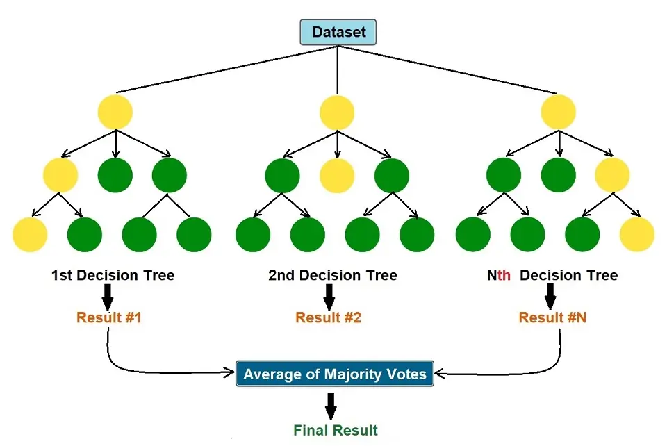
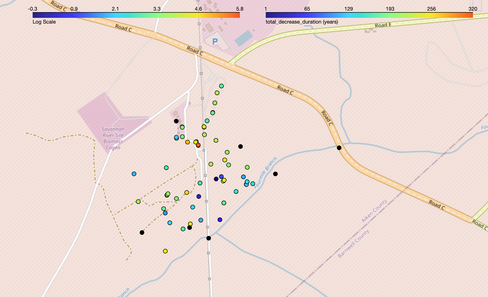

Projects
(1) Understanding Time-to-MCL Heterogeneity in Groundwater Wells
Status: In Progress
Timeline: May 2024 - Present
We are investigating the factors that explain the heterogeneity (i.e., variability) in Time-to-MCL (Maximum Concentration Limits) for groundwater wells. Heterogeneity in this context refers to the differences in the time it takes for various groundwater wells to reach the maximum allowable concentration of contaminants. Understanding this variability is crucial because it can help us predict which wells are at greater risk of contamination and require more frequent monitoring or early intervention.
- We will gather environmental well data, including variables such as aquifer type, screen zone, geographic coordinates, and average concentration in 2024;
- Employ a Random Forest regression to identify factors influencing the decrease of concentrations;
- Build on prior research utilizing Kalman filters to predict pollutant levels;
- Create informative plots to visualize the trends and forecasted concentrations.

(2) Assessing the Site Closure Time Frame for the Soil and Groundwater Contaminated Sites
Status: Completed
Timeline: Feb 2024 - April 2024
We're looking at the well data from a radioactive waste clean-up site (SRS F-Area) to predict how long it will take for pollution levels to drop to reach regulatory/safe limits (Maximum Concentration Limits - MCLs).
- Cleaned and preprocessed environmental well data from the SRS F-Area;
- Identified trends and predict time-to-MCL using linear regression with uncertainties;
- Used a spatial extrapolation technique to predict the overall cleanup timeline;
- Generated informative plots to visualize concentration trends;
- Plotted the wells with decreasing trends on a real-time map.
